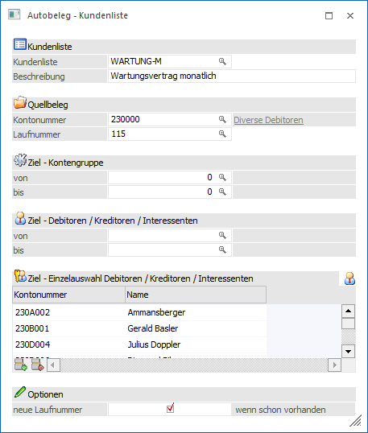
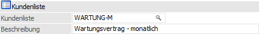
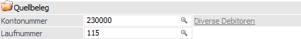
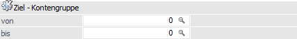
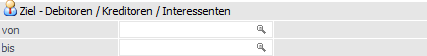
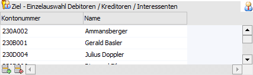
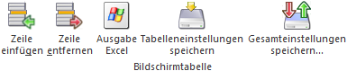
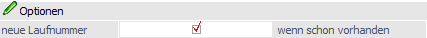

Mit Hilfe des Menüpunkts…
1 WinLine FAKT
1 Erfassen
1 Autobeleg
1 Kundenliste
… können Quell- und Zielinformationen für den Autobeleg definiert werden (d.h. welcher Quellbeleg soll auf welche Zielkunden / -lieferanten / -interessenten dupliziert werden).
Hinweis
Für welche Konten die Duplizierung erfolgen soll, kann über 3 Bereich ("Ziel - Kontengruppe", "Ziel - Debitoren / Kreditoren / Interessenten" und "Ziel - Einzelauswahl Debitoren / Kreditoren / Interessenten") definiert werden. Die Bereiche "Ziel - Kontengruppe" und "Ziel - Debitoren / Kreditoren / Interessenten" werden hierbei mit einer "UND"-Verknüpfung versehen, der Bereich "Ziel - Einzelauswahl Debitoren / Kreditoren / Interessenten" immer gesondert betrachtet.

Folgende Eingabefelder stehen zur Verfügung:
Kundenliste

Ø Kundenliste
An dieser Stelle wird der Name der Kundenliste (20-stellig, alphanumerisch) hinterlegt, in welcher die Empfänger der Autobelege definiert werden.
Ø Beschreibung
Hier kann die Langbeschreibung der Kundenliste (50-stellig, alphanumerisch) hinterlegt werden.
Quellbeleg

In diesem Bereich wird der Quellbeleg der Duplizierung hinterlegt.
Ø Kontonummer
An dieser Stelle erfolgt die Eingabe der Personenkontonummer, für welche der Quellbeleg erfasst wurde.
Ø Laufnummer
Hier wird die Laufnummer des Quellbelegs hinterlegt.
Ziel - Kontengruppe

Ø Ziel - Kontengruppe von / bis
In diesem Bereich können die Kunden- bzw. Lieferantengruppen, welche den Beleg erhalten sollen, definiert werden.
Ziel - Debitoren / Kreditoren / Interessenten

Ø Ziel - Debitoren / Kreditoren / Interessenten von / bis
An dieser Stelle können die Kunden / Lieferanten / Interessenten, welche den Beleg erhalten sollen, in Form einer von / bis - Eingrenzung definiert werden.
Hinweis
Werden sowohl Gruppenbereiche als auch Kontenbereich eingegeben, sind die beiden Felder mit "UND" verknüpft. D.h. ein Kunde / Lieferant / Interessent muss sowohl im definierten Gruppenbereich, als auch im definierten Kontenbereich liegen, um einen Beleg zu erhalten.
Tabelle "Ziel - Einzelauswahl Debitoren / Kreditoren / Interessenten

Sollten sich Debitoren / Kreditoren / Interessenten, die einen Beleg empfangen sollen, nicht in einem geschlossenen Bereich befinden, welcher durch eine von / bis - Eingabe beschrieben werden kann, dann können die gewünschten Kontonummern in der Tabelle einzeln eingetragen werden.
Ø Kunden aus Merkliste einfügen
Durch Anwahl dieses Buttons wird der Matchcode der Merklisten geöffnet, in welchem alle Merklisten dargestellt werden, welche Konten enthalten. Durch Auswahl einer Merkliste werden dann die entsprechend Konten in die Tabelle übergeben, wobei Konten, welche sich bereits in der Tabelle befinden, ignoriert werden.
Tabellenbuttons

Ø Zeile einfügen
Mit Hilfe dieses Buttons kann ein neues Konto eingefügt werden.
Ø Zeile entfernen
Durch Anwahl dieses Buttons kann die markierte Zeile gelöscht werden.
Ø Ausgabe Excel
Durch Anwahl des Buttons "Ausgabe Excel" wird der Inhalt der Tabelle an Microsoft Excel übergeben.
Ø Tabelleneinstellungen speichern
Die Spalten einer Tabelle können grundsätzlich an beliebige Positionen verschoben, bzw. in der Breite entsprechend angepasst werden. Durch Anwahl des Buttons "Tabelleneinstellungen speichern" werden die Einstellungen benutzerspezifisch gespeichert und bei dem nächsten Aufruf des Programmpunktes wieder vorgeschlagen.
Ø Gesamteinstellungen speichern…
Im Gegensatz zu "Tabelleneinstellungen speichern" können mit "Gesamteinstellungen speichern" mehrere Tabellenaufbauten gespeichert und nach Wunsch geladen werden. Zusätzlich werden Sonderfunktionen der Tabelle (z.B. "Spalte gruppieren") ebenfalls bei der Speicherung bedacht.
Optionen

Ø neue Laufnummer… wenn schon vorhanden
Ist die Laufnummer des Quellbeleges bei dem Zielkonto bereits vorhanden, so wird eine Duplizierung grundsätzlich nicht vorgenommen! Durch Aktivierung dieser Option wird in solch einem Fall automatisch eine neue Laufnummer verwendet, so dass die Belegerzeugung stattfinden kann.
Buttons
Ø Ok
Durch Drücken des Buttons "Ok" bzw. der Taste F5 werden alle getätigten Eingaben gespeichert.
Ø Ende
Mit Hilfe des Buttons "Ende" bzw. der Taste ESC wird das Fenster geschlossen und alle nicht gespeicherten Eingaben verworfen.
Ø Löschen
Durch Anwahl des Buttons "Löschen" kann die ausgewählte Kundenliste gelöscht werden. Hierbei ist zu beachten, dass dieses nur möglich ist, wenn die Liste in keiner Aktionsplanzeile mehr vorkommt.